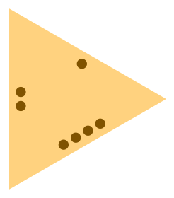
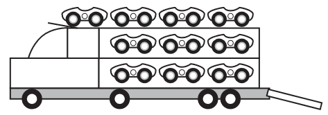

Na combinação completa (ou combinação com repetição), contamos o número de maneiras de escolher elementos de um conjunto, sendo permitido escolher um elemento repetidamente. Antes de formalizar o conceito, começamos com um exemplo que ilustra bem essa noção.
Exemplo1.7.1.
Em uma determinada sorveteria há 6 sabores disponíveis, de quantos modos pode ser feito um pedido de uma taça com 3 bolas de sorvete?
Denote cada sabor por um número entre \(1\) e \(6\text{.}\) Note que este problema é equivalente ao de encontrar o número de soluções inteiras da equação:
na qual, cada \(x_i, i\in\{1, 2, 3, 4, 5, 6\}\) representa a quantidade de bolas de sorvete com sabor \(i\text{.}\) Claramente, temos a restrição \(x_i\geq 0\text{,}\) pois não podemos pegar uma quantidade negativa de bolas de sorvete.
Vamos mostrar que o problema de encontrar o número de soluções (1.7.1) é equivalente a encontrar o número de permutações com repetições de uma sequência com \(3\) elementos de um tipo e \(5\) elementos de outro tipo.
Escreva de \(x_1\) até \(x_6\text{,}\) entre uma incógnita e outra coloque na linha de baixo um traço vertical. Para representar a quantidade bolas de sorvete com sabor \(1\) ou \(6\text{,}\) coloque a respectiva quantidade de bolas antes do primeiro traço ou depois do último traço, respectivamente. Para representar a quantidade de bolas de sorvete com sabor \(i\text{,}\) com \(i\in \{2, 3, 4, 5\}\text{,}\) coloque a quantidade de bolas abaixo de \(x_i\text{,}\) entre dois traços consecutivos. Assim, a solução
Observe que cada permutação dessa representação de traços e bolas é uma solução da Equação (1.7.1) e que cada solução da Equação (1.7.1) pode ser representada com traços de bolas (Existe uma bijeção entre as duas coisas).
Portanto, para encontrar o número de soluções da Equação (1.7.1), basta calcular
pois, temos 5 traços e 3 bolas, então estamos permutando um total de 8 elementos, sendo 5 de um tipo e 3 de outro tipo.
Definição1.7.2.
O número de combinações completas de \(n\) elementos, tomados \(p\) a \(p\) é o número de formas de escolher \(p\) elementos dentre \(n\) disponíveis, podendo escolher repetidamente os objetos, até obter a quantidade \(p\text{.}\)
O número de combinações completas de \(n\) elementos, tomados \(p\) a \(p\) é denotado por:
\begin{equation*}
CR_n^{p}
\end{equation*}
Nota1.7.3.
As combinações completas dos objetos \(1, 2, 3, 4\) tomados 3 a 3 são:
Usando a ideia da representação de "bolas e traços" da Solução do (Exemplo 1.7.1) vamos ficar com \(p\) bolas e \(n-1\) traços. O cálculo do número de permutações destes \(p+n-1\) objetos com \(p\) objetos de um tipo e \(n-1\) objetos de outro tipo é dado por:
O número de soluções desta equação, com \(x_i\in \mathbb{Z} \text{ e } x_i\geq 0, i\in\{1, 2, \ldots, 10\}\) é o número de combinações completas de 10 elementos, tomados 20 a 20:
\begin{equation}
x + y + z = 8. \tag{1.7.2}
\end{equation}
Desta forma, o número de soluções interias e não negativas de (1.7.2) será o número de soluções da equação original, pois, quando \(x\geq0\) teremos \(x_1\geq1\text{,}\) quando \(y\geq0\) teremos \(x_2\geq2\) e quando \(z\geq0\) teremos \(x_3\geq4\text{.}\) Portanto, a resposta é
A soma do número de soluções de cada um dos casos é a resposta, no entanto, é inviável fazer tal cálculo. Felizmente temos outra forma de resolver este problema.
Observe que existe uma bijeção entre o conjunto das soluções de (1.7.3) com o conjunto das soluções da equação (1.7.5):
Para entender a bijeção, observe o seguinte. Somando \(50-i, i\in \{0, 1, 2, \ldots, 50\}\text{,}\) nos dois lados da igualdade, na linha \(i, i\in \{0, 1, 2, \ldots, 50\}\) de (1.7.4), não mudamos absolutamente nada e ficamos com:
Cada solução da linha \(i\text{,}\) é uma solução de (1.7.5) com o valor de \(y\) igual a \(50-i\text{.}\) E para cada \(y\in \{0, 1, 2, \ldots, 50\}\) a solução de (1.7.5) vai ser a solução da linha \(y\) de (1.7.4) .
Portanto a resposta é o número de solução da equação (1.7.5) que é dado por:
Semelhante ao dominó, mas feito de pedras triangulares equiláteras, o jogo de trominó apresenta na face triangular superior um certo número de pontos com repetições, escolhidos de 1 a n, dispostos ao longo de cada aresta (ver figura).

Figura1.7.10.Uma das peças com os valores 1, 2 e 4.
Quantas peças há no trominó, supondo \(n = 6\text{?}\)
Observe que os números estão em disposição circular, então vamos separar as peças em três tipos:
Todos os lados com o mesmo valor. Cada peça pode ser formada de uma única forma.
Dois lados possuem um valor e o terceiro lado possui um valor diferente. Cada peça pode ser formada de uma única forma, pois o número de permutações circulares com 3 elementos é 2, mas como temos duas entradas iguais, precisamos dividir por 2.
Cada lado possui um valor diferente. Cada peça pode ser formada de duas formas, pois o número de permutações circulares com 3 elementos é 2.
Inicialmente, vamos contar como se em cada tipo, as peças só pudessem ser formadas de uma forma, depois vamos acrescentar a quantidade de peças do terceiro tipo, que fica faltando nessa contagem inicial.
Temos que escolher os valores de cada um dos 3 lados de cada peça do trominó. Como os valores vão de 1 até 6 e são 3 lados, o número de peças do trominó (sem contar as permutações circulares) para \(n=6\) é o número de soluções inteiras não negativas da equação:
Agora precisamos contar as peças, do terceiro tipo, que estão faltando. Como os três valores são diferentes, temos 6 opções de valores para escolher 3 e para cada escolha, temos duas formas de organizar na peça do trominó, portanto o número de peças desse tipo é:
representa uma pedra do dominó. Portanto, o número de pedras do dominó é
\begin{equation*}
CR_{7}^2 = 28.
\end{equation*}
3.
(UFPE 2012) As pedras de um dominó usual são compostas por dois quadrados, com 7 possíveis marcas (de zero pontos até 6 pontos). Quantas pedras terá um dominó se cada quadrado puder ter até 9 pontos? Veja no desenho abaixo um exemplo de uma nova pedra do dominó.
representa uma pedra do dominó. Portanto, o número de pedras do dominó é
\begin{equation*}
CR_{10}^2 = 55.
\end{equation*}
4.
(Enem 2017 - Modificado) Um brinquedo infantil caminhão-cegonha é formado por uma carreta e dez carrinhos nela transportados, conforme a figura.

No setor de produção da empresa que fabrica esse brinquedo, é feita a pintura de todos os carrinhos para que o aspecto do brinquedo fique mais atraente. São utilizadas as cores amarelo, branco, laranja e verde, e cada carrinho é pintado apenas com uma cor. O caminhão-cegonha tem uma cor fixa. A empresa determinou que em todo caminhão-cegonha deve haver pelo menos três carrinhos amarelos, dois laranjas e pelo menos um das outras cores disponíveis. Mudança de posição dos carrinhos no caminhão-cegonha não gera um novo modelo do brinquedo. Com base nessas informações, quantos são os modelos distintos do brinquedo caminhão-cegonha que essa empresa poderá produzir?
Caso \(x_2=0\text{,}\)\(x_1\geq 1\text{,}\) fazendo a mudança de variável \(x_1=a+1\text{,}\) ficamos com a equação: \((a+1) +0+ x_3+x_4+x_5 = 8\) que é equivalente a
O número de soluções inteiras e não negativas é \(PR_{10}^{7, 3}.\)
Caso \(x_2=1\text{,}\)\(x_1\geq 2\text{,}\) fazendo a mudança de variável \(x_1=a+2\text{,}\) ficamos com a equação: \((a+2) +1+ x_3+x_4+x_5 = 8\) que é equivalente a
O número de soluções inteiras e não negativas é \(PR_{8}^{5, 3}.\)
Caso \(x_2=2\text{,}\)\(x_1\geq 3\text{,}\) fazendo a mudança de variável \(x_1=a+3\text{,}\) ficamos com a equação: \((a+3) +2+ x_3+x_4+x_5 = 8\) que é equivalente a
O número de soluções inteiras e não negativas é \(PR_{6}^{3, 3}.\)
Caso \(x_2=3\text{,}\)\(x_1\geq 4\text{,}\) fazendo a mudança de variável \(x_1=a+4\text{,}\) ficamos com a equação: \((a+4) +3+ x_3+x_4+x_5 = 8\) que é equivalente a
Como as cores são diferentes, defina \(x_i,~ i\in {1, 2, \ldots, 6}\text{,}\) como a quantidade de objetos pintados na cor \(i\text{.}\) O número de modos de pintar os objetos é o número de soluções inteiras e não negativas da equação:
O número de soluções é \(PR_{20}^{15, 5} = 15504.\)
8.
Quantos inteiros entre \(1\) e \(100.000.000\text{,}\) inclusive, possui a propriedade: "cada dígito é menor ou igual ao seu sucessor"? (sucessor da esquerda para a direita)
Observe que o número \(100.000.000\) está fora, o maior número que deve ser levado em consideração é o \(99.999.999\text{.}\) Precisamos contar o número de dígitos \(i,~ i \in\{0, 1, 2, \ldots, 9\} \text{,}\) sendo que vamos sempre escolher 8 dígitos. Uma vez escolhido os dígitos, temos apenas uma maneira de ordená-los. Os números com menos que 8 dígitos são que o escolhemos pelo menos um zero, porém não podemos escolher todos os dígitos iguais a zero. O número total de maneiras de fazer isto é o número de soluções inteiras e não negativas da equação:
é o número de maneiras de colocar os anéis nos 8 dedos, sem levar em considereção que os anéis são diferentes. Para contar o total de maneiras levando em considereção que os anéis são diferentes, multiplicamos pelo número de maneiras de ordenar os anéis. A resposta é